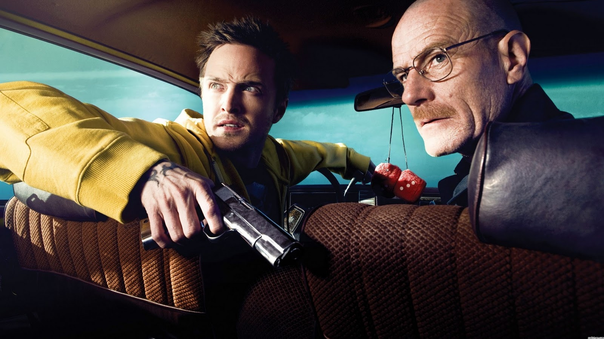
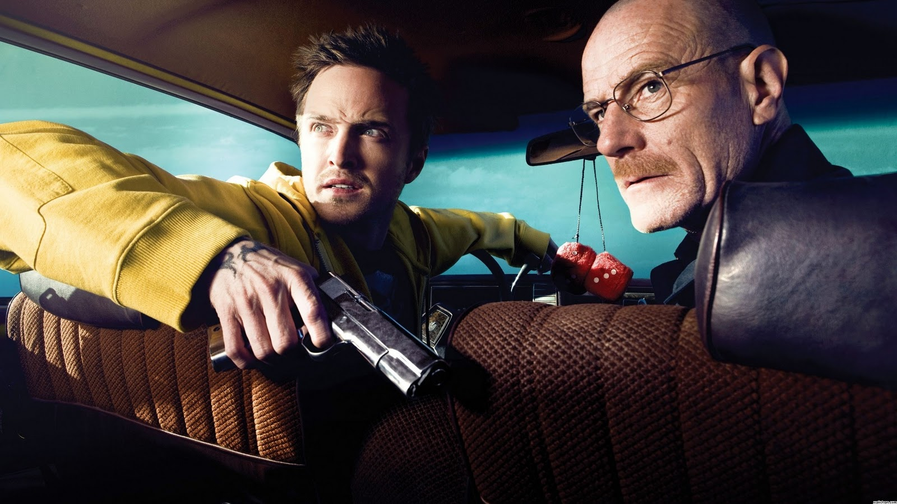

Ambientada no Novo México, Breaking Bad conta a história de Walter White, um professor de Química infeliz com sua vida, que enfrenta dificuldades financeiras para cuidar de sua esposa grávida e de seu filho deficiente físico.
Walter White, um professor colegial de química de 50 anos começa a produzir secretamente
metanfetamina para proporcionar uma segurança à sua família após descobrir que sofre de um câncer terminal no
pulmão. Ele se junta a seu ex-aluno, Jesse Pinkman, que é vendedor da droga.
A segunda temporada começa imediatamente do ponto em terminou a primeira. Walt e Jesse, após
se juntarem a Tuco (chefão do tráfico na região), se deparam com um gravíssimo problema. Literalmente a "casa
caiu" pro lado de Tuco, pois, a polícia (DEA) invadiu o seu prédio e prendeu todos. Tuco estava só.
A esposa de White pediu o divórcio, seu cunhado e agente do departamento anti-narcóticos
dos EUA (Dean Norris) está atrás dele e um cartel mexicano quer vê-lo morto. Mas com o futuro da família ainda
em jogo, Walt fecha um acordo que lhe trará uma fortuna, um esquema cujo preço é altíssimo.
Gus reforça a segurança no laboratório após a morte de Gale, ao mesmo tempo em que tenta
afastar Walter de Jesse, com a ajuda de Mike. Skyler aceita a metanfetamina de Walter e começa a trabalhar com
Saul. Enquanto isso, Walter engana Jesse e convence Hector a detonar uma bomba na mesma sala que Gus.
Walter, Jesse e Mike iniciam um novo negócio de drogas. Hank tenta provar que Walter é o
traficante Heisenberg. Walter pretende se render, mas muda de ideia depois que Elliott e Gretchen minimizam
seu envolvimento na criação de Gray Matter.
Principais Personagens
Walter White
Walter White é um professor de química do ensino médio, diagnosticado com adenocarcinoma estágio III no pulmão que passa a produzir metanfetamina para garantir o futuro financeiro de sua família.
Jesse Pinkman
Jesse Pinkman é um cozinheiro de metanfetamina de cristal e trabalha com seu ex-professor de química do ensino médio, Walter White (Bryan Cranston) em uma operação de metanfetamina. Jesse é o único personagem além de Walt a aparecer em cada episódio do show.
Gustavo Fring
Gus Fring poderoso chefão das drogas, Gus era um cidadão chileno e um respeitado dono de restaurante e filantropo de Albuquerque, dono de uma bem-sucedida cadeia de restaurantes de frango chamada "Los Pollos Hermanos " e a usava como cobertura para uma rede de distribuição de metanfetamina extremamente bem-sucedida no sudoeste dos Estados Unidos.